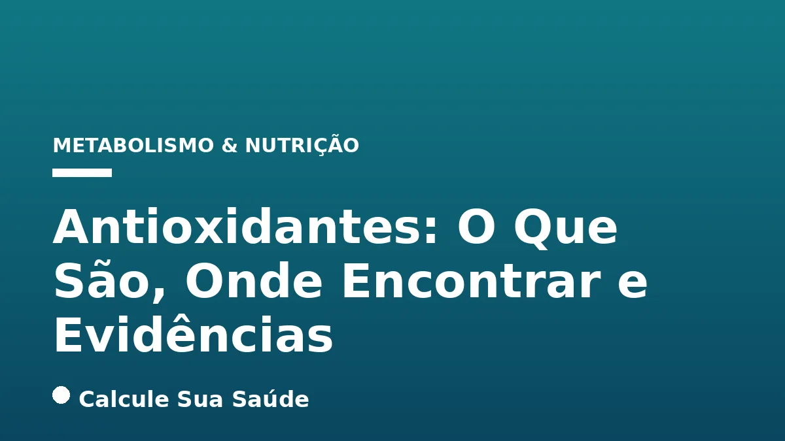

Aviso médico importante
Este conteúdo é educativo e informativo e não substitui a consulta, o diagnóstico ou o tratamento de um profissional de saúde. Em caso de sintomas, procure orientação médica.
Índice do Artigo
- 1. A Essência dos Antioxidantes: Definição e Mecanismos de Ação
- 2. Antioxidantes: Classificação e Fontes Naturais e Sintéticas
- 3. Onde Encontrar Antioxidantes: Um Guia Alimentar Completo
- 4. Antioxidantes Específicos e Suas Principais Fontes Dietéticas
- 5. Antioxidantes na Indústria Alimentar: Aditivos para Preservação
- 6. Os Benefícios Comprovados dos Antioxidantes Dietéticos para a Saúde
- 7. Suplementos Antioxidantes: Uma Análise Crítica das Evidências Científicas
- 8. Estresse Oxidativo: Causas, Fatores de Risco e Sinais de Alerta
- 9. Diagnóstico do Estresse Oxidativo: Métodos e Limitações
- 10. Prevenção do Estresse Oxidativo: A Estratégia da Dieta e do Estilo de Vida
- 11. Tratamentos com Antioxidantes: Onde a Ciência Oferece Respostas Claras
- 12. Mitos e Verdades sobre Antioxidantes: Desmistificando Crenças Populares
- 13. Antioxidantes no Contexto Brasileiro: Regulamentação e Alegações
- 14. Conclusão: A Abordagem Equilibrada para a Saúde Antioxidante
- 15. Perguntas frequentes
No vasto e complexo universo da biologia humana, a constante busca pelo equilíbrio é fundamental para a manutenção da saúde. Um dos pilares dessa homeostase reside na capacidade do nosso organismo de lidar com os radicais livres, moléculas altamente reativas que, em excesso, podem causar danos significativos às células. É nesse cenário que os antioxidantes emergem como protagonistas, substâncias vitais que atuam como defensores, prevenindo ou retardando esses danos celulares.
Este artigo, fundamentado nas mais recentes evidências científicas, visa desmistificar os antioxidantes, explorando sua definição molecular, as diversas fontes onde podem ser encontrados – com ênfase na dieta – e, crucialmente, o que a pesquisa moderna revela sobre seus benefícios e, por vezes, seus riscos. Abordaremos desde a bioquímica do estresse oxidativo até as recomendações práticas para otimizar a ingestão desses compostos protetores, sempre com o rigor e a clareza que o tema exige.
Compreender o papel dos antioxidantes é mais do que uma questão nutricional; é um passo essencial para a promoção de uma vida mais saudável e resiliente. Convidamos você a aprofundar-se neste conhecimento, que pode transformar a maneira como você enxerga sua alimentação e seu bem-estar geral.
Em resumo
- Antioxidantes são substâncias que protegem as células contra danos causados por radicais livres, minimizando o estresse oxidativo.
- Radicais livres são gerados naturalmente pelo metabolismo e por fatores externos, sendo importantes em baixas concentrações, mas prejudiciais em excesso.
- A melhor fonte de antioxidantes é uma dieta rica e variada em alimentos de origem vegetal, como frutas, vegetais, grãos integrais, nozes e sementes.
- O consumo de dietas ricas em antioxidantes está associado a menor risco de doenças crônicas como câncer e doenças cardiovasculares.
- Suplementos antioxidantes, em contraste com a dieta, não demonstram os mesmos benefícios e, em alguns casos, podem aumentar a mortalidade ou interferir em tratamentos.
- A prevenção do estresse oxidativo baseia-se em uma alimentação equilibrada e um estilo de vida saudável, não na suplementação indiscriminada.
1. A Essência dos Antioxidantes: Definição e Mecanismos de Ação
Antioxidantes são um grupo diversificado de substâncias que desempenham um papel fundamental na proteção da integridade celular. Sua principal função é prevenir ou retardar os danos às biomoléculas essenciais – como proteínas, lipídios e DNA – causados por espécies reativas de oxigênio (ERO) e/ou espécies reativas de nitrogênio (ERN). Essas moléculas instáveis, popularmente conhecidas como radicais livres, são caracterizadas por possuírem um ou mais elétrons desemparelhados, o que as torna altamente reativas e propensas a interagir e danificar estruturas celulares circundantes.
Radicais Livres e Espécies Reativas: O Inimigo Interno
Os radicais livres são gerados constantemente no corpo humano como subprodutos do metabolismo celular aeróbico, um processo vital para a produção de energia. Estima-se que aproximadamente 1-2% do oxigênio consumido nesse metabolismo seja convertido em EROs. Além das fontes endógenas, a produção de radicais livres pode ser exacerbada por fatores externos, como a exposição à poluição ambiental, radiação ultravioleta, fumaça de cigarro, o uso de certos medicamentos e o consumo excessivo de alimentos ultraprocessados.
Em concentrações baixas a moderadas, os radicais livres não são apenas inofensivos, mas desempenham papéis fisiológicos importantes. Eles atuam em processos de sinalização celular, na defesa imunológica contra patógenos e na regulação de diversas funções biológicas. No entanto, o equilíbrio é delicado e crucial para a saúde.
Estresse Oxidativo: O Desequilíbrio que Ameaça a Saúde
O acúmulo excessivo de radicais livres, quando a produção supera a capacidade do sistema de defesa antioxidante do corpo, leva a uma condição conhecida como estresse oxidativo. Este desequilíbrio resulta em danos extensos a biomoléculas vitais, comprometendo a função celular e contribuindo para o desenvolvimento e progressão de diversas doenças crônicas. O estresse oxidativo é um fator subjacente em muitas patologias, desde o envelhecimento precoce até doenças neurodegenerativas e cardiovasculares.
2. Antioxidantes: Classificação e Fontes Naturais e Sintéticas
A natureza e a origem dos antioxidantes são diversas, e eles podem ser classificados em duas categorias principais com base em sua produção ou obtenção:
A Defesa Endógena: Antioxidantes Enzimáticos do Nosso Corpo
O corpo humano possui um sofisticado sistema de defesa antioxidante intrínseco, composto por enzimas especializadas que neutralizam os radicais livres. As principais enzimas antioxidantes incluem:
- Superóxido Dismutase (SOD): Converte o radical superóxido em oxigênio e peróxido de hidrogênio.
- Catalase: Decompõe o peróxido de hidrogênio em água e oxigênio.
- Glutationa Peroxidase (GPx): Reduz o peróxido de hidrogênio e hidroperóxidos orgânicos, utilizando glutationa como cofator.
Essas enzimas trabalham em conjunto para manter o equilíbrio oxidativo e proteger as células contra danos. A atividade dessas enzimas pode ser influenciada por fatores genéticos, nutricionais e ambientais.
A Contribuição Exógena: Vitaminas, Minerais e Fitoquímicos
Além das defesas enzimáticas, o corpo depende de antioxidantes não enzimáticos, que são obtidos principalmente através da dieta. Estes incluem:
- Vitaminas: Vitamina C (ácido ascórbico), Vitamina E (tocoferóis e tocotrienóis) e Vitamina A (e seus precursores, como o beta-caroteno).
- Minerais: Selênio, Zinco, Cobre e Manganês, que atuam como cofatores para as enzimas antioxidantes ou possuem atividade antioxidante direta.
- Fitoquímicos: Uma vasta gama de compostos bioativos encontrados em plantas, como carotenoides (licopeno, luteína), flavonoides (quercetina, antocianinas), isotiocianatos e ácidos fenólicos. Estes compostos conferem cores, sabores e aromas aos alimentos vegetais e possuem potentes propriedades antioxidantes e anti-inflamatórias.
A interação sinérgica entre esses diferentes tipos de antioxidantes, tanto endógenos quanto exógenos, é crucial para uma proteção eficaz contra o estresse oxidativo.
3. Onde Encontrar Antioxidantes: Um Guia Alimentar Completo
A melhor e mais segura estratégia para garantir uma ingestão adequada de antioxidantes é através de uma dieta rica e variada, focada em alimentos de origem vegetal. A natureza nos oferece uma vasta gama de opções, cada uma com seu perfil único de compostos bioativos.
A Abundância em Frutas e Vegetais Coloridos
Frutas e vegetais são as fontes mais conhecidas e abundantes de antioxidantes. A diversidade de cores nesses alimentos é um indicativo da presença de diferentes fitoquímicos com propriedades antioxidantes. Priorizar um "prato colorido" é uma excelente forma de garantir uma ingestão variada:
- Frutas: Mirtilos, morangos, amoras, framboesas, cerejas (ricas em antocianinas); frutas cítricas como laranjas e toranjas (Vitamina C); melão, tomates e damascos (licopeno e beta-caroteno).
- Vegetais: Alcachofras, brócolis, couve-flor, couve de Bruxelas, couve, nabo e espinafre (ricos em sulforafanos e Vitamina C); batata doce e pimentões (beta-caroteno); repolho.
Grãos Integrais, Nozes e Sementes: Concentrados de Proteção
Estes alimentos, muitas vezes subestimados, são verdadeiras potências nutricionais e fontes significativas de antioxidantes, além de fibras e outros nutrientes essenciais:
- Nozes e Sementes: Nozes, nozes-pecã, sementes de girassol e amêndoas são ricas em Vitamina E e selênio.
- Grãos Integrais: Trigo sarraceno, milho, painço e cevada contêm diversos compostos fenólicos e tocotrienóis.
Especiarias, Chás e Outros Alimentos: Potencial Antioxidante Inesperado
Alguns itens que usamos diariamente para saborizar ou como bebidas também são excelentes fontes de antioxidantes:
- Especiarias: A cúrcuma, com seu composto ativo curcumina, é um potente antioxidante e anti-inflamatório.
- Bebidas: Chá (especialmente chá verde e preto, ricos em catequinas), café (ácidos clorogênicos) e alguns sucos de frutas.
- Chocolate Amargo: Dependendo do teor de cacau, o chocolate amargo é uma fonte notável de flavonoides.
A chave é a variedade. Uma dieta que incorpora uma ampla gama desses alimentos garante um espectro completo de antioxidantes, que atuam de forma sinérgica para proteger o organismo.
4. Antioxidantes Específicos e Suas Principais Fontes Dietéticas
Embora a sinergia dos antioxidantes em alimentos integrais seja o ideal, é útil conhecer as fontes específicas de alguns dos antioxidantes mais estudados:
Vitamina C: O Poder do Ácido Ascórbico
A Vitamina C, ou ácido ascórbico, é um antioxidante hidrossolúvel que atua neutralizando radicais livres em ambientes aquosos do corpo. É crucial para a saúde da pele, cicatrização de feridas e função imunológica. Suas principais fontes incluem:
- Frutas: Bagas (morango, mirtilo), melão, frutas cítricas (laranjas, toranjas), kiwi.
- Vegetais: Pimentões (vermelho, amarelo, verde), batatas, repolho, couve de Bruxelas, brócolis, espinafre.
Vitamina E: O Guardião das Membranas Celulares
A Vitamina E é um antioxidante lipossolúvel que protege as membranas celulares do dano oxidativo, especialmente os lipídios. É um grupo de oito compostos, sendo o alfa-tocoferol o mais biologicamente ativo. Fontes ricas incluem:
- Sementes: Sementes de girassol, amêndoas.
- Nozes: Avelãs, amendoim.
- Óleos Vegetais: Óleo de girassol, óleo de gérmen de trigo, azeite de oliva.
- Outros: Manteiga de amendoim.
Beta-caroteno e Outros Carotenoides: Precursores da Vitamina A
O beta-caroteno é um pigmento encontrado em plantas que o corpo pode converter em Vitamina A, um nutriente essencial para a visão, função imunológica e saúde da pele. Ele também atua como antioxidante por si só. As principais fontes são:
- Frutas e Vegetais de Cor Laranja e Vermelha: Cenouras, damascos, pimentões, batata doce, abóbora, manga.
- Vegetais de Folhas Verdes Escuras: Espinafre, couve.
Minerais Essenciais: Selênio e Zinco
Esses minerais não são antioxidantes diretos, mas são componentes vitais de enzimas antioxidantes ou atuam como cofatores, sendo, portanto, indispensáveis para a defesa antioxidante do corpo:
- Zinco: Encontrado em carnes, grãos integrais, leite, sementes e nozes. É crucial para a função de mais de 300 enzimas, incluindo a superóxido dismutase.
- Selênio: Presente em grãos integrais, nozes (especialmente a castanha-do-pará), sementes, frutos do mar e carnes. É um componente essencial da glutationa peroxidase.
A ingestão balanceada desses nutrientes através da dieta é fundamental para a manutenção de um sistema antioxidante robusto.
5. Antioxidantes na Indústria Alimentar: Aditivos para Preservação
Além de seu papel na saúde humana, os antioxidantes são amplamente utilizados na indústria alimentícia como aditivos para preservar a qualidade dos alimentos. A Agência Nacional de Vigilância Sanitária (ANVISA) no Brasil regulamenta rigorosamente o uso dessas substâncias, que podem ser de origem natural ou sintética.
A principal função dos antioxidantes como aditivos é retardar a deterioração dos alimentos, prevenindo processos como a rancidez (oxidação de gorduras) e a descoloração. Isso aumenta a vida útil dos produtos e mantém suas características sensoriais e nutricionais. A legislação brasileira exige uma lista positiva de aditivos, o que significa que qualquer antioxidante só pode ser utilizado se estiver expressamente previsto na legislação para aquela categoria de alimento, com limites máximos e condições de uso bem definidos.
Exemplos comuns de antioxidantes utilizados como aditivos alimentares incluem:
- BHT (Butil-hidroxitolueno) e BHA (Butil-hidroxianisol): Antioxidantes sintéticos frequentemente usados em óleos, gorduras e produtos de panificação.
- TBHQ (Butil-hidroquinona terciária): Outro antioxidante sintético, comum em óleos vegetais e produtos fritos.
- Ácido Cítrico: Um antioxidante natural encontrado em frutas cítricas, usado para prevenir a oxidação e como acidulante.
- Ácido Ascórbico (Vitamina C): Utilizado em sucos, carnes processadas e produtos de panificação para prevenir a oxidação e manter a cor.
- Tocoferol (Vitamina E): Antioxidante natural encontrado em óleos vegetais, usado para proteger gorduras da rancidez.
- Palmitato de Ascorbila: Uma forma lipossolúvel da Vitamina C, usada em produtos oleosos.
A regulamentação da ANVISA visa garantir a segurança dos consumidores, assegurando que o uso desses aditivos seja feito de forma controlada e em concentrações que não representem riscos à saúde.
6. Os Benefícios Comprovados dos Antioxidantes Dietéticos para a Saúde
O consumo regular de uma dieta rica em frutas, vegetais e leguminosas, que são fontes naturais de antioxidantes, está consistentemente associado a uma série de benefícios para a saúde. As evidências científicas apontam para um menor risco de desenvolvimento de doenças crônicas, muitas das quais estão intrinsecamente ligadas ao estresse oxidativo. É importante ressaltar que esses benefícios são atribuídos ao consumo dos alimentos em sua totalidade, e não à ingestão isolada de antioxidantes via suplementos.
Saúde Cardiovascular: Proteção Contra a Aterosclerose
O estresse oxidativo desempenha um papel crucial na patogênese e progressão de diversas doenças cardiovasculares, incluindo aterosclerose, isquemia miocárdica, insuficiência cardíaca e hipertensão arterial. A oxidação do LDL (o "colesterol ruim") é um passo chave na formação das placas ateroscleróticas. Dietas ricas em antioxidantes, como aquelas com alto consumo de frutas e vegetais, podem ajudar a proteger o coração, minimizando o dano oxidativo e melhorando a função endotelial. Isso se alinha com as recomendações para o manejo de colesterol e triglicerídeos.
Prevenção de Certos Tipos de Câncer: O Papel da Dieta
Uma alimentação abundante em frutas e vegetais tem sido associada à redução do risco de muitos tipos de câncer. Embora o mecanismo exato não seja totalmente compreendido, acredita-se que os antioxidantes, juntamente com outros compostos bioativos presentes nesses alimentos, contribuam para essa proteção. Eles podem neutralizar radicais livres que danificam o DNA, inibir a proliferação de células cancerígenas e modular vias de sinalização celular. No entanto, é o padrão dietético geral, e não um antioxidante específico, que parece conferir o benefício. Por exemplo, a prevenção de câncer de mama está fortemente ligada a hábitos alimentares saudáveis.
Saúde Ocular: O Impacto na Degeneração Macular Relacionada à Idade (DMRI)
A Degeneração Macular Relacionada à Idade (DMRI) é uma das principais causas de perda de visão em idosos. Evidências de certeza moderada, provenientes de estudos como o AREDS (Age-Related Eye Disease Study), sugerem que a suplementação de uma fórmula específica de vitaminas antioxidantes e minerais (Vitamina C, Vitamina E, beta-caroteno e zinco) pode retardar a progressão para a DMRI avançada em indivíduos com a doença em estágio intermediário ou avançado em um olho. Este é um dos poucos casos em que a suplementação antioxidante demonstrou um benefício claro e específico.
Fortalecimento do Sistema Imunológico
Diversos antioxidantes desempenham papéis cruciais na manutenção de um sistema imunológico robusto. A Vitamina C, por exemplo, estimula a formação de anticorpos e a produção, função e movimento de glóbulos brancos, essenciais para combater infecções. A Vitamina E protege a integridade das membranas celulares das células imunes, enquanto o zinco é fundamental para a cicatrização de feridas e apoia a resposta imune adaptativa e inata.
Potencial na Subfertilidade Feminina: Uma Análise Cautelosa
Há evidências de baixa a muito baixa qualidade que sugerem que a ingestão de antioxidantes pode beneficiar mulheres subférteis, possivelmente melhorando a taxa de nascidos vivos e a taxa de gravidez clínica. No entanto, a evidência é limitada e não há aumento de risco de aborto espontâneo, gestações múltiplas ou gravidez ectópica. Mais pesquisas de alta qualidade são necessárias para confirmar esses achados e estabelecer recomendações claras.
7. Suplementos Antioxidantes: Uma Análise Crítica das Evidências Científicas
Apesar dos inegáveis benefícios dos antioxidantes obtidos através de uma dieta equilibrada, a pesquisa sobre suplementos antioxidantes tem apresentado resultados amplamente decepcionantes e, em muitos casos, preocupantes. A ideia de que "mais é sempre melhor" não se aplica quando se trata de antioxidantes isolados em doses elevadas.
Mortalidade e Riscos: Um Alerta Importante
Uma revisão sistemática abrangente da Cochrane, publicada em 2021, que analisou 78 ensaios clínicos randomizados com quase 300.000 participantes, não encontrou evidências para apoiar o uso de suplementos antioxidantes para prevenção primária ou secundária de mortalidade em indivíduos saudáveis ou pacientes com diversas doenças. Pelo contrário, a revisão indicou que suplementos de Vitamina A, beta-caroteno e Vitamina E podem aumentar a mortalidade. Em ensaios com baixo risco de viés, esse aumento da mortalidade foi ainda mais pronunciado, acendendo um alerta significativo sobre a segurança da suplementação indiscriminada.
Impacto no Câncer e Doenças Cardiovasculares
A esperança de que suplementos antioxidantes pudessem prevenir câncer ou doenças cardiovasculares não se concretizou na maioria dos estudos. Altas doses de beta-caroteno, por exemplo, foram associadas a um aumento do risco de câncer de pulmão em fumantes. Suplementos de Vitamina C, por sua vez, não demonstraram afetar o risco de câncer ou doenças cardíacas. Os ensaios clínicos randomizados focados em vitaminas antioxidantes para doenças cardiovasculares têm sido consistentemente decepcionantes, e alguns estudos até observaram um risco excessivo de mortalidade cardiovascular com a suplementação de beta-caroteno.
Interferência com Tratamentos Médicos e Efeitos Pró-oxidantes
Um aspecto crítico e frequentemente negligenciado é a potencial interferência dos suplementos antioxidantes com tratamentos médicos. Em pacientes com câncer, por exemplo, a suplementação antioxidante pode reduzir os efeitos curativos da quimioterapia, que muitas vezes dependem da geração controlada de radicais livres para destruir as células tumorais. Além disso, em doses elevadas, alguns antioxidantes – especialmente os sintéticos – podem exibir atividades pró-oxidantes, ou seja, podem paradoxalmente causar o efeito contrário ao desejado, gerando mais radicais livres e danos celulares. O consumo abusivo de suplementos de Vitamina C já foi associado à formação de pedras nos rins.
Atletas e Antioxidantes: O Equilíbrio Fisiológico
Para atletas e indivíduos que praticam exercícios físicos intensos, não há evidências convincentes que apoiem os benefícios da suplementação antioxidante. Pelo contrário, a ingestão de antioxidantes exógenos pode impedir algumas funções fisiológicas dos radicais livres que são necessárias para a sinalização celular e para as adaptações benéficas ao treinamento. O corpo precisa de um certo nível de estresse oxidativo para sinalizar processos de reparo e adaptação, e a supressão excessiva desses sinais pode ser contraproducente para o desempenho e a saúde a longo prazo.
8. Estresse Oxidativo: Causas, Fatores de Risco e Sinais de Alerta
O estresse oxidativo, resultante do desequilíbrio entre a produção de radicais livres e a capacidade antioxidante do corpo, é um processo complexo com múltiplas causas e fatores de risco. Compreender esses elementos é crucial para a prevenção e manejo.
Fontes de Radicais Livres: Do Metabolismo à Exposição Ambiental
As causas do estresse oxidativo podem ser divididas em endógenas (originadas dentro do corpo) e exógenas (provenientes do ambiente):
- Metabolismo Celular Normal: A respiração celular, embora essencial para a vida, gera radicais livres como subprodutos inevitáveis.
- Inflamação: Respostas inflamatórias crônicas produzem EROs e ERNs como parte da defesa imune, mas podem se tornar excessivas.
- Exercício Físico Intenso: Embora benéfico, o exercício extenuante pode aumentar temporariamente a produção de EROs, exigindo uma resposta antioxidante eficaz.
- Exposição a Poluentes Ambientais: Substâncias como fumaça de cigarro, poluição do ar, metais pesados e pesticidas são fontes significativas de radicais livres.
- Radiação: Exposição à radiação ultravioleta (UV) do sol ou radiação ionizante pode induzir a formação de radicais livres.
- Medicamentos: Certos fármacos podem aumentar a produção de EROs como efeito colateral.
- Dieta Inadequada: O consumo excessivo de alimentos ultraprocessados, ricos em gorduras saturadas, açúcares e aditivos, pode promover o estresse oxidativo. O impacto do açúcar no corpo é um exemplo claro.
Sintomas do Envelhecimento Celular Acelerado
O estresse oxidativo compromete o funcionamento das células e pode acelerar o processo de envelhecimento, manifestando-se através de sintomas sutis e progressivos que muitas vezes são atribuídos simplesmente à idade. É importante notar que esses sintomas são inespecíficos e podem estar relacionados a diversas outras condições, mas sua persistência pode indicar um desequilíbrio oxidativo:
- Cansaço Constante: Fadiga inexplicável e persistente.
- Queda de Cabelo e Unhas Frágeis: Sinais de comprometimento da saúde dos tecidos.
- Pele Sem Brilho e Manchas Precoces: Envelhecimento cutâneo acelerado, perda de elasticidade e surgimento de hiperpigmentação.
- Dificuldade de Concentração e Memória: Declínio cognitivo sutil, "nevoeiro cerebral".
- Inflamações Frequentes: Maior suscetibilidade a processos inflamatórios e recuperação mais lenta.
Reconhecer esses sinais precocemente e adotar medidas preventivas pode ser fundamental para mitigar os efeitos do estresse oxidativo a longo prazo.
9. Diagnóstico do Estresse Oxidativo: Métodos e Limitações
A avaliação do estresse oxidativo é um campo complexo na medicina laboratorial. Embora existam diversos biomarcadores que podem ser medidos, não existe um único exame que "meça o envelhecimento" ou forneça um diagnóstico definitivo e abrangente do estresse oxidativo em um indivíduo.
Os exames laboratoriais disponíveis buscam identificar desequilíbrios entre a produção de radicais livres e a capacidade antioxidante. Eles podem medir:
- Produtos de Dano Oxidativo: Como malondialdeído (MDA) para lipídios oxidados, 8-hidroxi-2'-desoxiguanosina (8-OHdG) para dano oxidativo ao DNA, e carbonilação de proteínas.
- Capacidade Antioxidante Total: Testes como FRAP (Ferric Reducing Antioxidant Power) ou ORAC (Oxygen Radical Absorbance Capacity) que avaliam a capacidade total de uma amostra (sangue, urina) de neutralizar radicais livres.
- Níveis de Antioxidantes Específicos: Medição de vitaminas (C, E), minerais (selênio, zinco) e enzimas antioxidantes (SOD, GPx, catalase).
A interpretação desses resultados deve ser feita com cautela por profissionais de saúde experientes, pois os níveis de biomarcadores podem variar amplamente devido a fatores como dieta recente, estilo de vida, presença de doenças agudas ou crônicas, e até mesmo o horário da coleta. Além disso, muitos desses marcadores são mais utilizados em pesquisa do que na prática clínica rotineira para o diagnóstico de estresse oxidativo em indivíduos assintomáticos.
O objetivo principal desses exames é identificar desequilíbrios que possam indicar a necessidade de intervenções preventivas ou terapêuticas, sempre no contexto de uma avaliação clínica completa e individualizada. Não se trata de uma "medida de envelhecimento", mas sim de indicadores de processos bioquímicos que podem influenciar a saúde e o envelhecimento celular, como a autofagia.
10. Prevenção do Estresse Oxidativo: A Estratégia da Dieta e do Estilo de Vida
A principal e mais eficaz estratégia para prevenir o estresse oxidativo e promover a saúde geral é a adoção de uma dieta equilibrada e um estilo de vida saudável. Esta abordagem holística é amplamente respaldada pela ciência e oferece benefícios muito mais abrangentes do que a suplementação isolada.
Dieta Equilibrada e Rica em Alimentos In Natura
A base da prevenção reside no consumo abundante de alimentos in natura e minimamente processados. Isso significa:
- Variedade de Frutas e Vegetais: Consumir uma ampla gama de frutas e vegetais de diferentes cores diariamente. Cada cor indica a presença de fitoquímicos distintos com propriedades antioxidantes únicas.
- Grãos Integrais: Priorizar pães, massas, arroz e cereais na sua forma integral, que são ricos em fibras e antioxidantes.
- Nozes e Sementes: Incluir porções regulares de nozes, amêndoas, castanhas e sementes (chia, linhaça, girassol) na dieta.
- Leguminosas: Feijões, lentilhas, grão-de-bico são excelentes fontes de proteínas vegetais, fibras e antioxidantes.
- Fontes de Gorduras Saudáveis: Azeite de oliva extra virgem, abacate e peixes ricos em ômega-3.
Essa abordagem dietética não apenas fornece um espectro completo de antioxidantes, mas também outros nutrientes essenciais que atuam em sinergia para proteger o corpo.
Estilo de Vida Saudável: Complemento Essencial
Além da alimentação, outros pilares do estilo de vida são cruciais para minimizar o estresse oxidativo:
- Atividade Física Regular: Exercícios moderados e regulares fortalecem os sistemas antioxidantes endógenos do corpo.
- Hidratação Adequada: Beber água suficiente é vital para todos os processos metabólicos e para a eliminação de toxinas.
- Evitar o Tabagismo: A fumaça do cigarro é uma das maiores fontes de radicais livres e toxinas.
- Moderação no Consumo de Álcool: O álcool pode gerar estresse oxidativo e sobrecarregar o fígado.
- Gerenciamento do Estresse: O estresse crônico pode aumentar a produção de radicais livres. Técnicas de relaxamento, meditação e hobbies são importantes.
- Qualidade do Sono: Um sono reparador é essencial para a recuperação celular e para o funcionamento adequado dos sistemas de defesa do corpo.
Ao adotar essas práticas, o indivíduo constrói uma defesa robusta contra o estresse oxidativo, promovendo a saúde e o bem-estar a longo prazo.
11. Tratamentos com Antioxidantes: Onde a Ciência Oferece Respostas Claras
No campo dos tratamentos, a aplicação de antioxidantes como terapia específica é mais limitada do que se poderia imaginar, especialmente quando se trata de suplementos isolados. A grande maioria das pesquisas não apoia o uso de suplementos antioxidantes para a prevenção ou tratamento da maioria das doenças crônicas.
No entanto, existe uma exceção notável e bem documentada:
- Degeneração Macular Relacionada à Idade (DMRI): Conforme mencionado anteriormente, a fórmula AREDS (Age-Related Eye Disease Study), que inclui Vitamina C, Vitamina E, beta-caroteno e zinco, demonstrou retardar a progressão para a DMRI avançada em pacientes com a doença em estágio intermediário ou avançado em um dos olhos. Esta é uma das poucas intervenções com suplementos antioxidantes que possui evidência de certeza moderada para um benefício clínico significativo. É crucial que essa suplementação seja feita sob orientação médica, pois o beta-caroteno, por exemplo, é contraindicado para fumantes devido ao risco aumentado de câncer de pulmão.
Para a vasta maioria das outras condições de saúde, a abordagem terapêutica com antioxidantes se concentra na otimização da dieta e do estilo de vida. Em casos de deficiências nutricionais específicas, a suplementação de vitaminas ou minerais (como Vitamina C, Vitamina E, selênio ou zinco) pode ser indicada, mas sempre com base em um diagnóstico preciso e sob supervisão profissional. A ideia de que suplementos antioxidantes podem "curar" ou "prevenir" indiscriminadamente doenças é um mito que não encontra respaldo na ciência atual.
12. Mitos e Verdades sobre Antioxidantes: Desmistificando Crenças Populares
A popularidade dos antioxidantes gerou muitos mitos e equívocos. É fundamental diferenciar o que a ciência realmente comprova do que é apenas crença popular ou marketing. Abaixo, desmistificamos alguns dos mitos mais comuns:
Mito Comum O Que a Ciência Diz Suplementos antioxidantes são uma "solução milagrosa" para prevenir todas as doenças e o envelhecimento. Não há provas de que suplementos antioxidantes curem ou retardem o envelhecimento ou previnam a maioria das doenças. Os benefícios observados estão relacionados ao conjunto de nutrientes presentes nos alimentos e aos hábitos de vida saudáveis como um todo. Quanto mais antioxidantes, melhor. Doses elevadas de suplementos antioxidantes podem ser prejudiciais e, em alguns casos, aumentar o risco de mortalidade ou ter efeitos pró-oxidantes. O equilíbrio é a chave. Antioxidantes em suplementos são tão eficazes quanto os encontrados nos alimentos. Pesquisas não encontraram que os suplementos forneçam proteção significativa contra a maioria das doenças crônicas. É aconselhável obter nutrientes dos alimentos, pois eles contêm uma matriz complexa de compostos bioativos que atuam em sinergia, algo que os suplementos isolados não replicam. Tomar suplementos antioxidantes é seguro e não tem contraindicações. Suplementos podem interagir com medicamentos (ex: quimioterapia) e, em altas doses, causar efeitos adversos (ex: beta-caroteno em fumantes, Vitamina C e pedras nos rins). Sempre consulte um profissional de saúde. A mensagem central da ciência é clara: a proteção antioxidante mais eficaz e segura vem de uma dieta rica e variada em alimentos integrais, e não de pílulas ou cápsulas isoladas.
13. Antioxidantes no Contexto Brasileiro: Regulamentação e Alegações
No Brasil, a Agência Nacional de Vigilância Sanitária (ANVISA) desempenha um papel crucial na regulamentação de produtos que contêm antioxidantes, sejam eles aditivos alimentares ou suplementos. A legislação brasileira é rigorosa para garantir a segurança e a eficácia desses produtos para o consumidor.
Regulamentação de Aditivos Alimentares
Como mencionado, a ANVISA adota uma lista positiva para aditivos alimentares, o que significa que apenas os antioxidantes expressamente autorizados podem ser utilizados em categorias específicas de alimentos, dentro de limites máximos e condições de uso estabelecidas. Isso impede o uso indiscriminado e garante que os níveis de exposição sejam seguros para a população.
Alegações de Propriedades Funcionais e/ou de Saúde para Suplementos
Para suplementos alimentares que contêm antioxidantes, a ANVISA permite alegações de propriedades funcionais e/ou de saúde, desde que essas alegações sejam cientificamente comprovadas e atendam aos valores mínimos estabelecidos em instruções normativas específicas. Por exemplo:
- Vitamina C: Pode ser alegado que "auxilia na formação do colágeno", "auxilia na absorção de ferro dos alimentos", "auxilia no funcionamento do sistema imune", "auxilia no metabolismo energético" e "é um antioxidante que auxilia na proteção dos danos causados pelos radicais livres".
- Zinco: Pode ser alegado que "auxilia na visão", "auxilia no metabolismo da Vitamina A", "auxilia no metabolismo de proteínas, carboidratos e gorduras", "auxilia na síntese de proteínas", "auxilia no processo de divisão celular", "auxilia na manutenção de ossos", "auxilia no funcionamento do sistema imune", "é um antioxidante que auxilia na proteção dos danos causados pelos radicais livres" e "contribui para a manutenção do cabelo, da pele e das unhas".
- Selênio: Pode ser alegado que "é um antioxidante que auxilia na proteção dos danos causados pelos radicais livres" e "auxilia no funcionamento do sistema imune".
Essas regulamentações visam proteger o consumidor de alegações enganosas e garantir que os produtos comercializados no país ofereçam os benefícios prometidos, com base em evidências científicas sólidas. É sempre recomendável verificar o registro dos produtos na ANVISA e buscar orientação de profissionais de saúde antes de iniciar qualquer suplementação.
14. Conclusão: A Abordagem Equilibrada para a Saúde Antioxidante
A jornada pelo universo dos antioxidantes revela uma verdade fundamental: a natureza, em sua sabedoria, nos oferece os melhores recursos para proteger nossa saúde. Os antioxidantes são, sem dúvida, componentes vitais para o funcionamento celular e a prevenção de doenças, atuando como escudos contra o estresse oxidativo.
No entanto, a ciência moderna nos alerta para a distinção crucial entre os benefícios obtidos de uma dieta rica em alimentos integrais e os riscos potenciais associados à suplementação isolada e em altas doses. Enquanto uma alimentação variada, abundante em frutas, vegetais, grãos integrais, nozes e sementes, confere proteção robusta e comprovada, os suplementos antioxidantes, com raras exceções como a fórmula AREDS para DMRI, não demonstraram os mesmos efeitos protetores e, em alguns casos, podem até ser prejudiciais.
Portanto, a mensagem final é de equilíbrio e prudência. Em vez de buscar "soluções milagrosas" em pílulas, o foco deve estar na construção de um estilo de vida saudável e sustentável. Priorize a diversidade alimentar, hidrate-se adequadamente, pratique atividade física regular, gerencie o estresse e garanta um sono de qualidade. Essa abordagem integrada é a verdadeira chave para fortalecer as defesas antioxidantes do seu corpo e promover uma vida plena e com saúde duradoura. Sempre consulte um profissional de saúde para orientações personalizadas.
15. Perguntas frequentes
O que são radicais livres e por que são prejudiciais?
Radicais livres são moléculas instáveis com elétrons desemparelhados, geradas naturalmente no corpo ou por fatores externos. Em excesso, causam estresse oxidativo, danificando células, proteínas, lipídios e DNA, o que contribui para o envelhecimento e o desenvolvimento de doenças crônicas.Qual a diferença entre antioxidantes enzimáticos e não enzimáticos?
Antioxidantes enzimáticos são produzidos pelo próprio corpo (ex: superóxido dismutase, catalase) e atuam como defesas internas. Antioxidantes não enzimáticos são obtidos principalmente da dieta (ex: vitaminas C, E, A, minerais como selênio e zinco, fitoquímicos) e complementam a proteção.Quais são as melhores fontes alimentares de antioxidantes?
As melhores fontes são alimentos de origem vegetal, como frutas (mirtilos, morangos, frutas cítricas), vegetais (brócolis, espinafre, pimentões, batata doce), grãos integrais, nozes, sementes, ervas, especiarias (cúrcuma) e chocolate amargo.Suplementos antioxidantes são eficazes para prevenir doenças?
A maioria das evidências científicas não apoia o uso de suplementos antioxidantes para prevenção de doenças crônicas ou mortalidade. Em alguns casos, como com beta-caroteno em fumantes, podem até aumentar riscos. Os benefícios são observados com a ingestão de antioxidantes via dieta.Antioxidantes podem interferir em tratamentos médicos?
Sim, suplementos antioxidantes podem interferir com certos tratamentos, como a quimioterapia, reduzindo sua eficácia. É crucial discutir qualquer suplementação com seu médico, especialmente se estiver em tratamento para alguma condição de saúde.Como posso saber se estou com estresse oxidativo?
Não existe um exame único para diagnosticar o estresse oxidativo. Sintomas como cansaço constante, queda de cabelo, pele sem brilho e inflamações frequentes podem ser indicativos. Exames laboratoriais de biomarcadores podem ser usados em pesquisa, mas a interpretação clínica é complexa e deve ser feita por um profissional de saúde.Qual a melhor forma de aumentar a ingestão de antioxidantes?
A melhor forma é adotar uma dieta equilibrada e rica em alimentos in natura e minimamente processados. Consuma uma variedade de frutas, vegetais, grãos integrais, nozes e sementes diariamente, priorizando diferentes cores para obter um amplo espectro de antioxidantes.A ANVISA regulamenta os antioxidantes no Brasil?
Sim, a ANVISA regulamenta o uso de antioxidantes como aditivos alimentares, exigindo uma lista positiva de uso com limites máximos. Para suplementos alimentares, permite alegações de propriedades funcionais e/ou de saúde para antioxidantes como Vitamina C, zinco e selênio, desde que comprovadas cientificamente e dentro dos valores estabelecidos.Leia também
Referências e Fontes
1. NIH - National Institutes of Health (PMC). Antioxidants: a comprehensive review. Disponível em: pmc.ncbi.nlm.nih.gov
2. Mayo Clinic. Add antioxidants to your diet. Disponível em: vertexaisearch.cloud.google.com
3. PubMed. Antioxidants: benefits and risks for long-term health. Disponível em: vertexaisearch.cloud.google.com
4. NIH - National Institutes of Health (PMC). Free Radicals, Antioxidants in Disease and Health. Disponível em: pmc.ncbi.nlm.nih.gov
5. Cochrane Library. Antioxidant supplements for prevention of mortality in healthy participants and patients with various diseases - Bjelakovic, G. Disponível em: cochranelibrary.com
6. NIH - National Institutes of Health (PMC). Antioxidants: Current Summary. Disponível em: ncbi.nlm.nih.gov
7. Mayo Clinic News Network. A Grocery Bag of Beneficial Antioxidants. Disponível em: vertexaisearch.cloud.google.com
8. Folha de S.Paulo. O mito antioxidante - 08/02/2011. Disponível em: vertexaisearch.cloud.google.com